A3 ERP
Solution ERP Intégrée pour votre Entreprise
Guide de présentation complet avec capture d'écran de chaque fonctionnalité et guide d'utilisation à destination des clients
📊 Ventes & Facturation
🛒 Achats & Fournisseurs
📦 Gestion des Stocks
💰 Trésorerie
📒 Comptabilité SYSCOHADA
📈 Analytique & Rapports
Table des matières
Ce guide présente toutes les fonctionnalités de l'ERP A3, accompagnées de captures d'écran réelles et d'instructions pas à pas pour une prise en main rapide.
Le tableau de bord est la page d'accueil de l'ERP A3. Il offre une vue synthétique et en temps réel de l'activité de votre entreprise : chiffre d'affaires, encaissements, trésorerie, alertes de stock et indicateurs clés de performance.
http://erp/dashboard — Tableau de bord
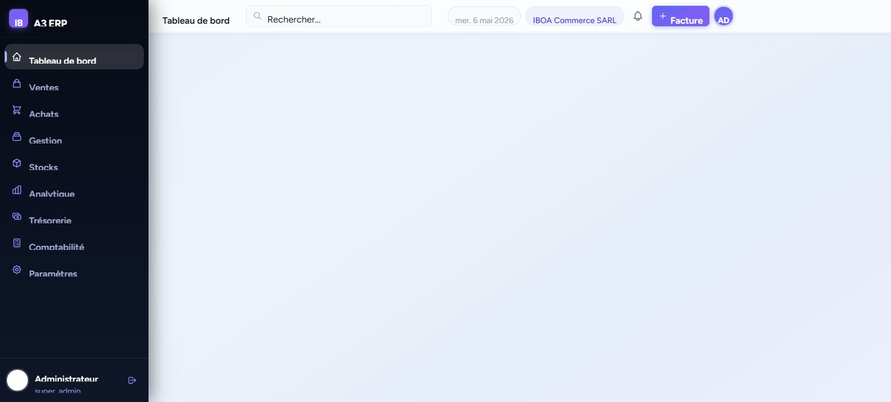
📊
CA en temps réel
Chiffre d'affaires du jour, du mois et annuel avec évolution graphique.
💵
Trésorerie
Soldes en direct de la caisse et des comptes bancaires.
🔔
Alertes
Notifications de retards de paiement et ruptures de stock.
⚡
Accès rapides
Créer une facture, un devis ou un nouveau client en un clic.
📖 Guide d'utilisation
- Connectez-vous avec votre e-mail et mot de passe sur la page de connexion.
- Le tableau de bord s'affiche automatiquement après connexion.
- Consultez les KPIs (CA aujourd'hui, ce mois, encaissements, trésorerie) dans les cartes du haut.
- Utilisez le graphique Chiffre d'affaires pour voir l'évolution sur 7, 30 jours ou 6 mois.
- Vérifiez la zone Alertes (droite) pour les retards ou ruptures de stock.
- Cliquez sur + Nouvelle facture, Devis ou Nouveau client pour créer rapidement.
Le module Devis permet de créer et gérer des propositions commerciales professionnelles pour vos clients. Un devis peut être converti en commande puis en facture en quelques clics, assurant une fluidité totale dans le cycle de vente.
http://erp/ventes/devis — Liste des devis
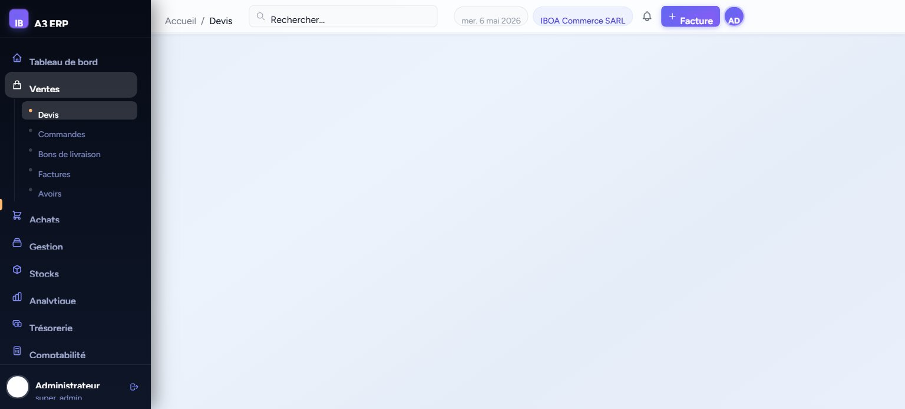
http://erp/ventes/devis/1 — Détail d'un devis
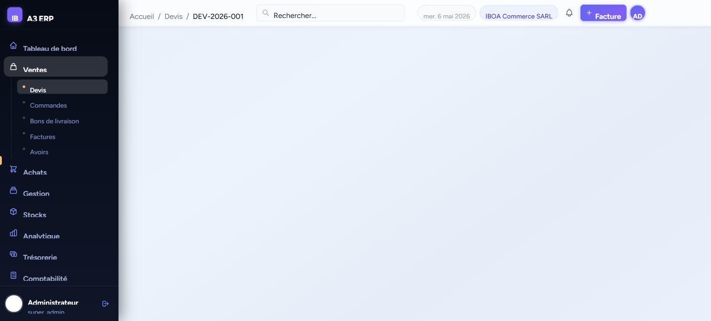
📖 Guide d'utilisation
- Naviguez vers Ventes → Devis dans le menu latéral.
- Cliquez sur + Nouveau devis (bouton violet en haut à droite).
- Sélectionnez le client dans la liste déroulante (ou créez-en un nouveau).
- Ajoutez les lignes d'articles : choisissez l'article, la quantité et vérifiez le prix.
- Renseignez les conditions de paiement et la date de validité.
- Cliquez Enregistrer pour sauvegarder en brouillon ou Envoyer pour l'envoyer au client.
- Depuis le détail du devis, utilisez Convertir en commande dès acceptation par le client.
💡 Vous pouvez exporter chaque devis en PDF pour l'envoyer par e-mail au client via le bouton dédié dans le détail du devis.
Le module Commandes clients centralise toutes les commandes reçues de vos clients. Chaque commande peut être générée depuis un devis accepté ou créée manuellement. Le suivi du statut (brouillon → confirmé → livré) est intégré.
http://erp/ventes/commandes — Commandes clients
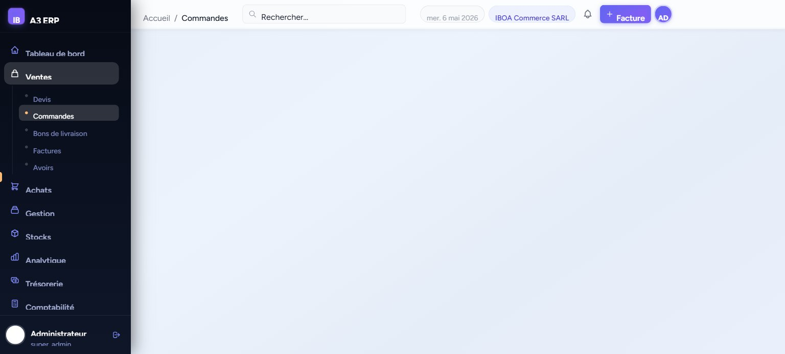
📖 Guide d'utilisation
- Accédez à Ventes → Commandes.
- Les commandes issues d'un devis sont automatiquement créées lors de la conversion.
- Pour créer manuellement : cliquez + Nouvelle commande, choisissez le client et ajoutez les articles.
- Confirmez la commande en cliquant sur Confirmer pour bloquer le stock.
- Depuis une commande, créez le Bon de livraison ou la Facture directement.
- Utilisez les filtres (statut, date, client) pour retrouver rapidement une commande.
Les bons de livraison (BL) documentent chaque expédition de marchandises vers vos clients. Ils déclenchent automatiquement la sortie de stock correspondante et servent de base pour la facturation.
http://erp/ventes/bons-livraison — Bons de livraison
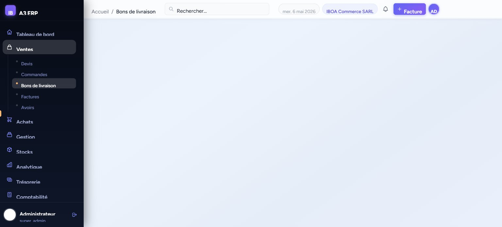
📖 Guide d'utilisation
- Accédez à Ventes → Bons de livraison.
- Créez un BL depuis une commande confirmée (bouton Créer BL) ou manuellement via + Nouveau BL.
- Sélectionnez l'entrepôt source et vérifiez les quantités à expédier.
- Validez le BL : le stock est automatiquement décrémenté.
- Imprimez ou exportez le BL en PDF pour accompagner la livraison.
Le module de facturation permet de créer, gérer et suivre toutes vos factures clients. Les factures sont générées automatiquement depuis les commandes ou BL, ou créées manuellement. Le suivi du statut de paiement (brouillon → validée → payée) est intégré.
http://erp/ventes/factures — Factures clients
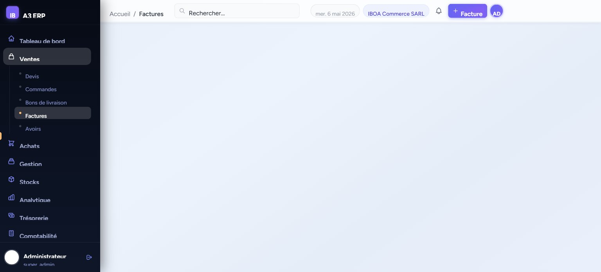
📖 Guide d'utilisation
- Allez dans Ventes → Factures ou cliquez + Facture en haut de l'écran.
- Choisissez le client, ajoutez les lignes d'articles avec les prix et la TVA applicable.
- Cliquez Valider pour finaliser la facture et générer l'écriture comptable automatique.
- Exportez en PDF pour envoi au client.
- Enregistrez le paiement via le module Trésorerie → Encaissements.
- Utilisez les filtres pour retrouver les factures impayées, en retard ou par client.
💡La validation d'une facture génère automatiquement les écritures comptables dans le journal des ventes (SYSCOHADA).
Le module Achats gère les commandes passées auprès de vos fournisseurs. Il couvre le cycle complet : création de la commande → réception des marchandises → facturation fournisseur, avec mise à jour automatique du stock à la réception.
http://erp/achats/commandes — Commandes fournisseurs
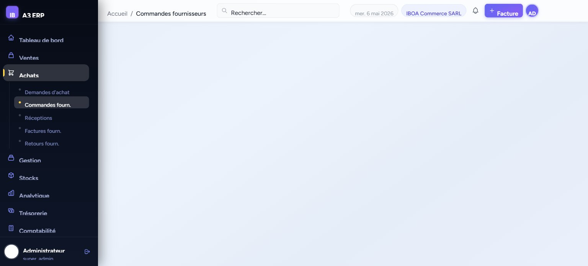
📖 Guide d'utilisation
- Naviguez vers Achats → Commandes fournisseurs.
- Cliquez + Nouvelle commande, sélectionnez le fournisseur et l'entrepôt de destination.
- Ajoutez les lignes d'articles commandés avec les quantités et prix d'achat.
- Envoyez la commande au fournisseur et passez le statut à Envoyée.
- À réception, cliquez Réceptionner : le stock est automatiquement incrémenté.
- Créez la facture fournisseur depuis la réception pour enregistrer la dette.
Le répertoire clients centralise toutes les informations de vos clients : coordonnées, contacts, adresses, historique des commandes et factures, balance âgée et relevé de compte. Chaque fiche client offre une vision à 360° de la relation commerciale.
http://erp/gestion/clients — Clients
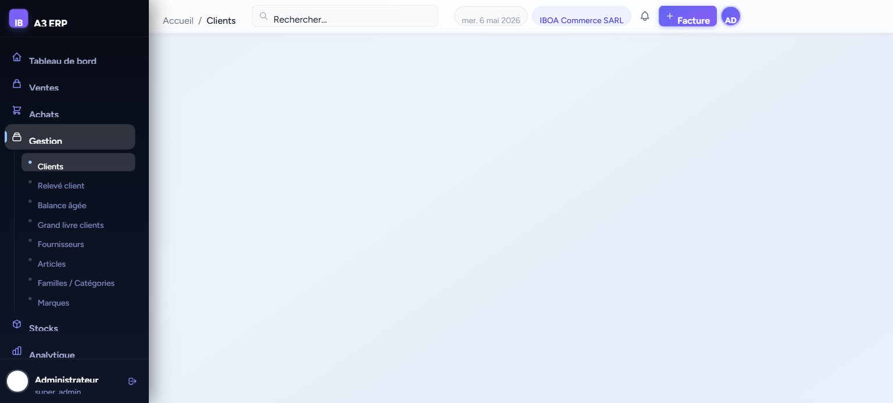
📖 Guide d'utilisation
- Allez dans Gestion → Clients.
- Cliquez + Nouveau client pour créer une fiche client.
- Renseignez : raison sociale, type (particulier/entreprise), téléphone, e-mail, adresse.
- Définissez la limite de crédit, les jours de paiement et la remise par défaut.
- Ajoutez des contacts multiples et des adresses de livraison si nécessaire.
- Depuis la fiche client, accédez aux onglets Factures, Commandes, Paiements pour l'historique complet.
- Exportez la liste en Excel ou PDF pour vos reportings.
Le module fournisseurs regroupe toutes les informations relatives à vos partenaires d'achat. Gérez les contacts, les conditions d'achat et consultez l'historique des commandes et des paiements par fournisseur.
http://erp/gestion/fournisseurs — Fournisseurs
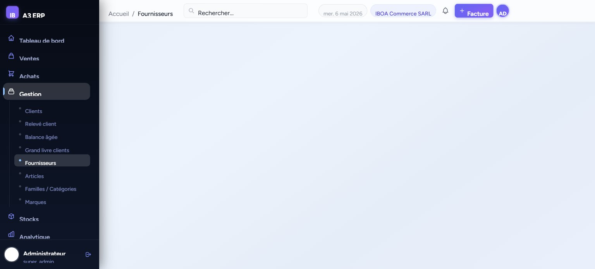
📖 Guide d'utilisation
- Allez dans Gestion → Fournisseurs.
- Cliquez + Nouveau fournisseur pour créer une fiche.
- Renseignez : raison sociale, type (entreprise/particulier), contacts, adresses.
- Précisez les conditions commerciales : délai de paiement, devise, remise habituelle.
- Consultez l'historique des achats depuis la fiche du fournisseur.
Le catalogue articles recense tous les produits et services que vous vendez ou achetez. Chaque article dispose d'une fiche complète : prix d'achat et de vente, TVA applicable, unité de mesure, stock disponible, seuils d'alerte et tarifs spéciaux.
http://erp/products — Articles
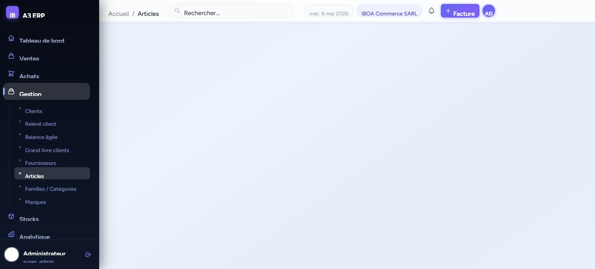
http://erp/products/1 — Fiche article
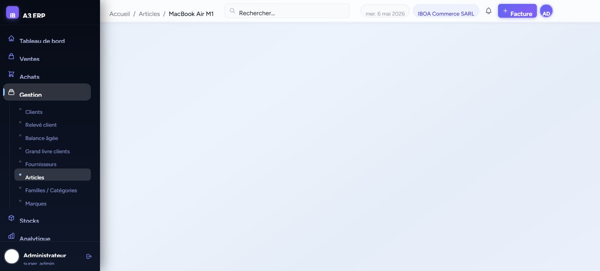
📖 Guide d'utilisation
- Accédez à Gestion → Articles.
- Cliquez + Nouvel article pour créer un article.
- Renseignez : désignation, référence, famille, type (simple/composé/service).
- Définissez le prix d'achat, le prix de vente HT et la TVA.
- Paramétrez les seuils : stock minimum, maximum et seuil de réapprovisionnement.
- Ajoutez des tarifs spéciaux par client ou famille de clients.
- Importez en masse via le bouton Importer (fichier Excel).
Le module Stocks offre une visibilité en temps réel sur les niveaux de stock de chaque article par entrepôt. Il indique le stock disponible, le stock réservé (commandes en cours), le stock physique et le statut par rapport aux seuils d'alerte.
http://erp/stocks — Niveaux de stock
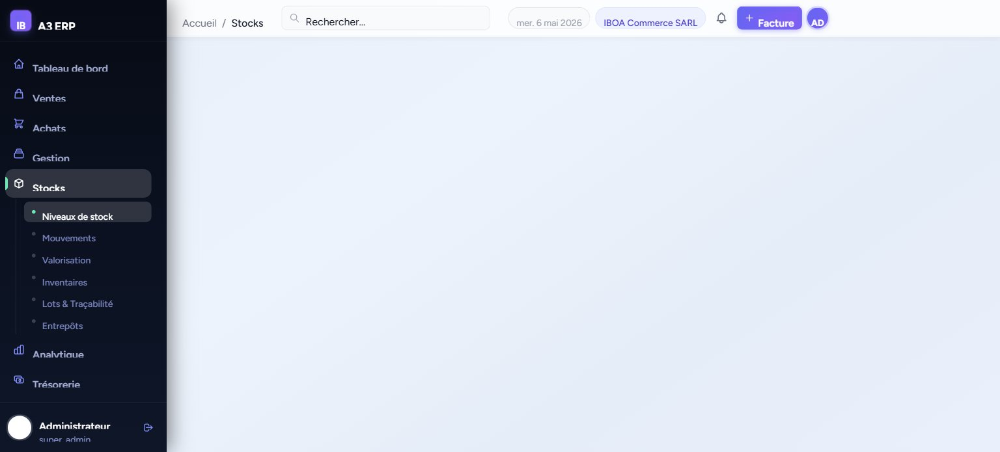
📖 Guide d'utilisation
- Naviguez vers Stocks → Niveaux de stock.
- Filtrez par entrepôt pour voir le stock d'un dépôt spécifique.
- Cochez Stock bas uniquement pour identifier les articles sous le seuil d'alerte.
- Cliquez + Nouveau mouvement pour enregistrer une entrée ou sortie manuelle.
- Exportez le rapport de stock en Excel ou PDF pour l'inventaire.
- Accédez aux inventaires, lots & traçabilité et entrepôts via les liens rapides.
L'historique des mouvements de stock trace toutes les entrées et sorties de marchandises : réceptions de commandes fournisseurs, livraisons clients, ajustements manuels, transferts entre entrepôts. Chaque mouvement est daté, référencé et attribué à un utilisateur.
http://erp/stocks/mouvements — Mouvements de stock
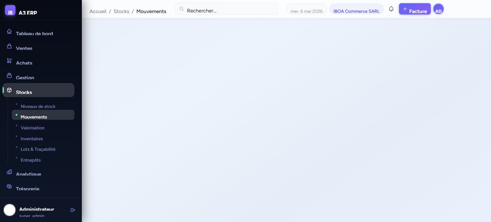
📖 Guide d'utilisation
- Allez dans Stocks → Mouvements.
- Filtrez par produit, entrepôt, type (entrée/sortie) et période.
- Pour un mouvement manuel : cliquez + Nouveau mouvement, choisissez le type, l'article, la quantité et l'entrepôt.
- Chaque mouvement affiche le coût unitaire (valorisation au CMP).
- Exportez l'historique en Excel pour vos audits et inventaires.
Le module Encaissements centralise tous les paiements reçus de vos clients. Chaque encaissement est imputé sur une ou plusieurs factures, met à jour le solde client et génère automatiquement l'écriture comptable correspondante.
http://erp/tresorerie/encaissements — Encaissements
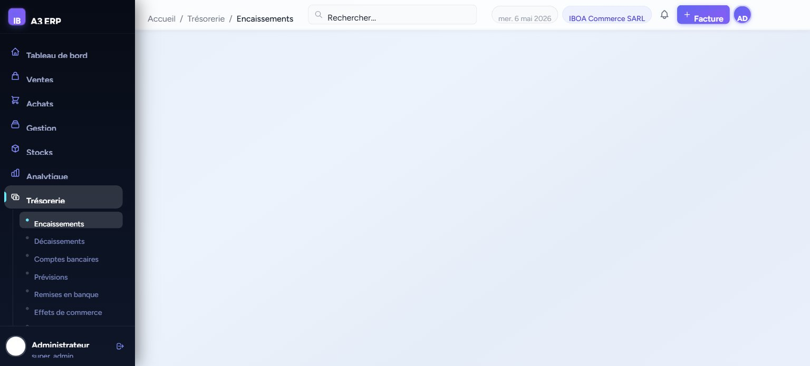
📖 Guide d'utilisation
- Accédez à Trésorerie → Encaissements.
- Cliquez + Nouveau paiement pour enregistrer un encaissement.
- Sélectionnez le client, la date, le montant et le mode de paiement (espèces, virement, chèque…).
- Cochez les factures à imputer dans la liste des factures ouvertes.
- Validez : la facture est marquée payée et l'écriture comptable est générée.
💡La validation d'un encaissement génère automatiquement les écritures comptables dans le journal de caisse ou banque (SYSCOHADA).
Le module Décaissements enregistre tous les paiements effectués à vos fournisseurs. Chaque décaissement est imputé sur les factures fournisseurs correspondantes et met à jour la trésorerie en temps réel.
http://erp/tresorerie/decaissements — Décaissements
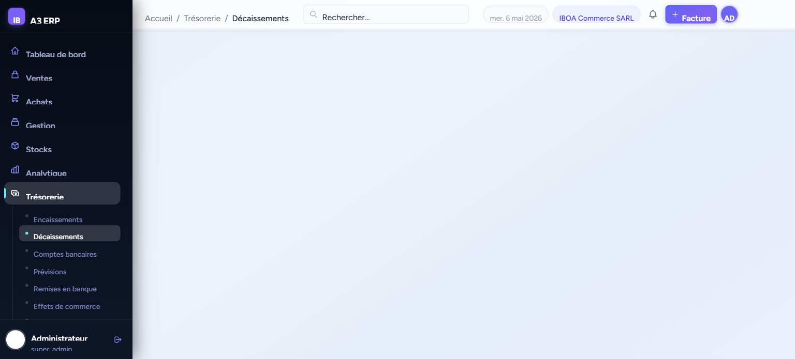
📖 Guide d'utilisation
- Accédez à Trésorerie → Décaissements.
- Cliquez + Nouveau paiement pour enregistrer un règlement fournisseur.
- Sélectionnez le fournisseur, le montant, la date et le mode de paiement.
- Cochez les factures fournisseurs à solder.
- Validez pour mettre à jour le solde fournisseur et générer l'écriture comptable.
L'ERP A3 intègre le plan comptable SYSCOHADA révisé (136 comptes préchargés), conforme aux normes comptables en vigueur en Afrique de l'Ouest et Centrale. Vous pouvez personnaliser le plan en ajoutant ou modifiant des comptes selon vos besoins.
http://erp/comptabilite/plan-comptable — Plan comptable
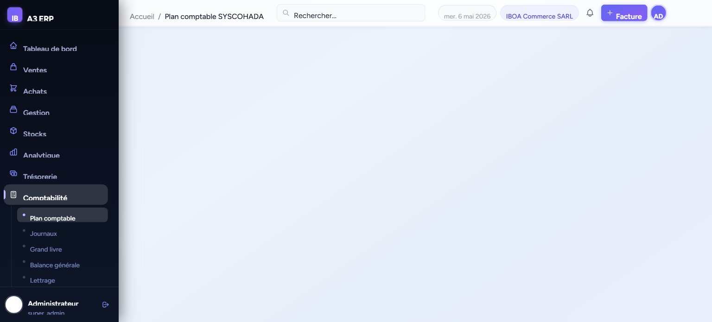
📖 Guide d'utilisation
- Accédez à Comptabilité → Plan comptable.
- Naviguez dans les classes (1 à 9) via le filtre déroulant.
- Cliquez sur le code d'un compte pour le modifier (libellé, type, saisissable).
- Ajoutez un nouveau compte via + Nouveau compte en précisant le code, le libellé et la classe.
- Exportez le plan comptable complet en PDF ou Excel.
Le journal comptable liste toutes les écritures comptables générées automatiquement (ventes, encaissements, achats, décaissements) ou saisies manuellement. Chaque écriture est validée et datée, garantissant la traçabilité complète.
http://erp/comptabilite/journaux — Journal comptable
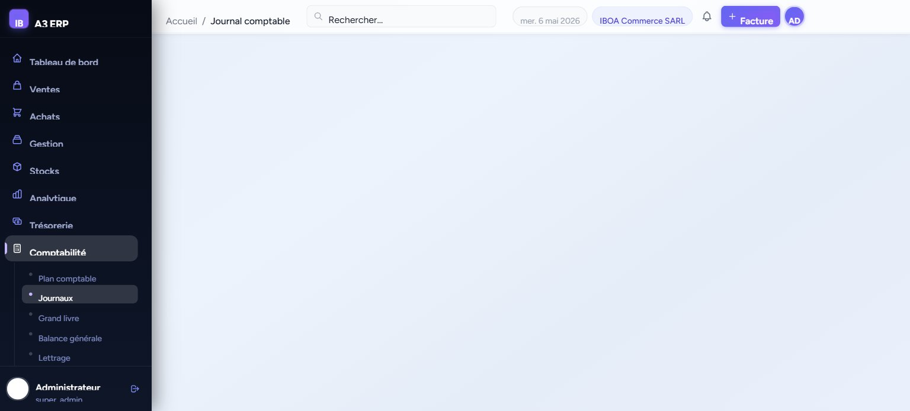
📖 Guide d'utilisation
- Accédez à Comptabilité → Journaux.
- Filtrez par type de journal (ventes VE, caisse CA, achats AC, banque BQ…).
- Consultez le détail d'une écriture en cliquant sur son numéro.
- Pour une saisie manuelle : cliquez + Nouvelle écriture, complétez les lignes débit/crédit.
- Exportez le journal en PDF ou Excel pour les déclarations fiscales.
Le grand livre présente le détail de tous les mouvements par compte comptable. Pour chaque compte, vous visualisez les lignes de débit et crédit avec la pièce associée, et le solde cumulé au fil du temps. L'équilibre débit/crédit est vérifié en temps réel.
http://erp/comptabilite/grand-livre — Grand livre
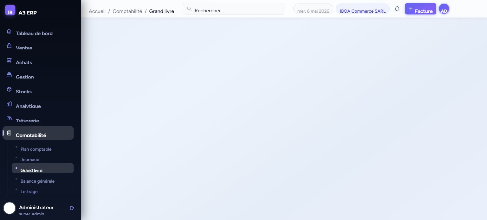
📖 Guide d'utilisation
- Accédez à Comptabilité → Grand livre.
- Filtrez par classe de comptes, compte spécifique ou période.
- Cliquez Afficher pour actualiser l'affichage.
- Vérifiez que le total indique Équilibré (Total Débit = Total Crédit).
- Exportez en Excel ou PDF pour vos audits comptables.
La balance générale est un état de synthèse comptable qui présente pour chaque compte les soldes d'ouverture, les mouvements de la période et les soldes finaux (débiteur/créditeur). C'est un document clé pour vérifier l'exactitude de votre comptabilité et préparer les états financiers.
http://erp/comptabilite/balance — Balance générale
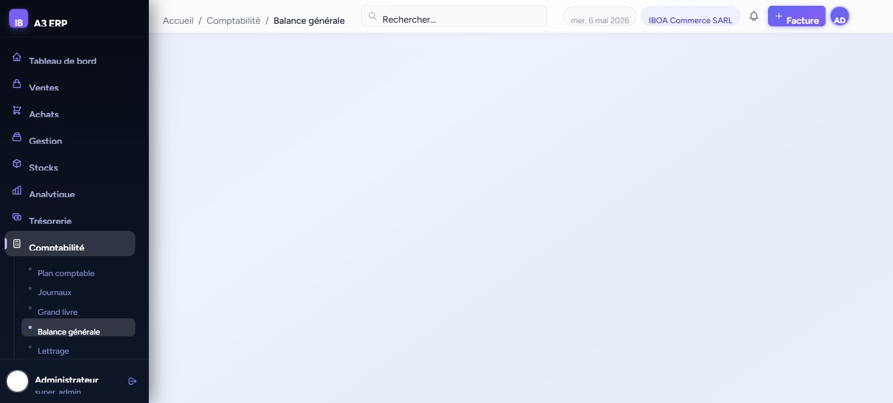
📖 Guide d'utilisation
- Accédez à Comptabilité → Balance générale.
- Sélectionnez une classe de comptes ou laissez "Toutes les classes".
- Définissez une période (date début / date fin) pour filtrer par exercice.
- Cliquez Afficher pour générer la balance.
- Vérifiez la mention Équilibré (Mvts Débit = Mvts Crédit).
- Exportez en PDF ou Excel pour remise à l'expert-comptable ou administration fiscale.
💡La balance SYSCOHADA est utilisée pour préparer le Bilan, le Compte de résultat et le Tableau de flux de trésorerie annuels.
Le module Analytique propose 5 rapports métier prêts à l'emploi pour piloter votre activité : analyse du chiffre d'affaires, des marges, des performances commerciales, des achats fournisseurs et l'âge des créances. Tous les rapports sont exportables en Excel.
http://erp/reports — Rapports & Analyse BI
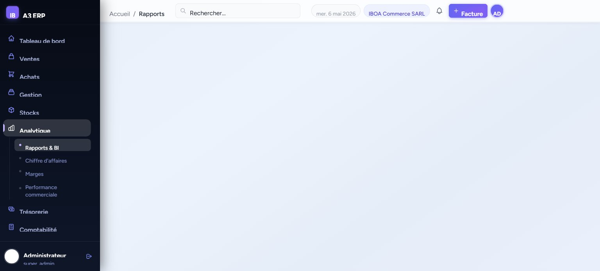
📊
Chiffre d'affaires
Évolution du CA par période, par client avec tendances.
💹
Analyse des marges
Marge brute par produit, taux de marge, coût vs prix de vente.
👤
Performance commerciale
CA par commercial, nombre de clients, panier moyen.
🛒
Achats fournisseurs
Analyse des factures fournisseurs par période et par fournisseur.
⏰
Âge des créances
Ancienneté des factures impayées par client (buckets 1-30j, 31-60j…).
📖 Guide d'utilisation
- Accédez à Analytique → Rapports & BI.
- Cliquez sur la carte du rapport souhaité (ex: Chiffre d'affaires).
- Définissez la période d'analyse et les filtres (client, produit, commercial…).
- Consultez les graphiques et tableaux interactifs.
- Exportez en Excel pour des analyses complémentaires.
Le module Paramétrage permet de configurer toutes les informations de votre entreprise : identité légale, coordonnées, logo, numéro RCCM, NIF, comptes bancaires, ainsi que les paramètres comptables (exercice fiscal, devises, taux de TVA, numérotation des documents).
http://erp/parametrage — Paramétrage société
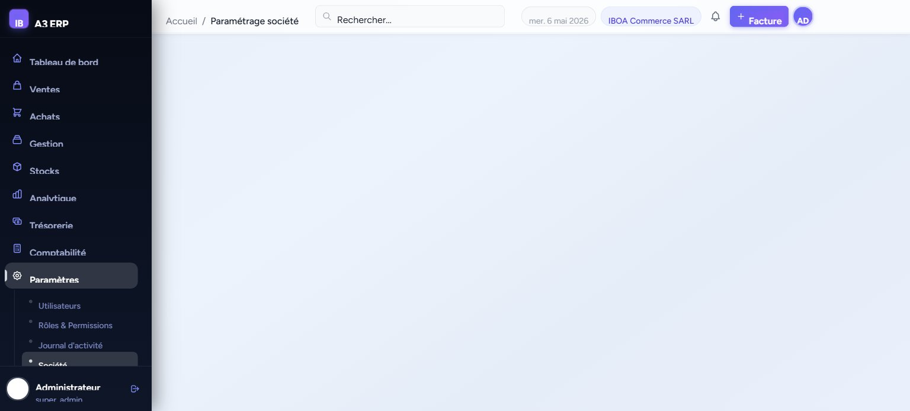
🏢
Informations générales
Raison sociale, adresse, téléphone, e-mail, logo.
⚖️
Légal & Fiscal
RCCM, NIF, régime fiscal, exercice comptable.
📄
Documents
Pied de page, mentions légales sur devis et factures.
🏦
Comptes bancaires
Coordonnées bancaires pour impression sur les documents.
📖 Guide d'utilisation
- Accédez à Paramètres → Société.
- Onglet Général : renseignez raison sociale, nom commercial, téléphone, e-mail, adresse.
- Onglet Légal & Fiscal : saisissez le RCCM, NIF, forme juridique et exercice fiscal.
- Onglet Documents : personnalisez les mentions qui apparaissent sur vos devis et factures.
- Onglet Banque : ajoutez vos comptes bancaires (ils s'affichent sur les factures).
- Cliquez Enregistrer pour sauvegarder chaque onglet.
L'ERP A3 intègre un système de gestion des accès par rôles et permissions. Vous pouvez créer autant d'utilisateurs que nécessaire, leur attribuer des rôles (Super Admin, Manager, Commercial, Comptable…) et contrôler finement les accès à chaque module.
http://erp/users — Utilisateurs
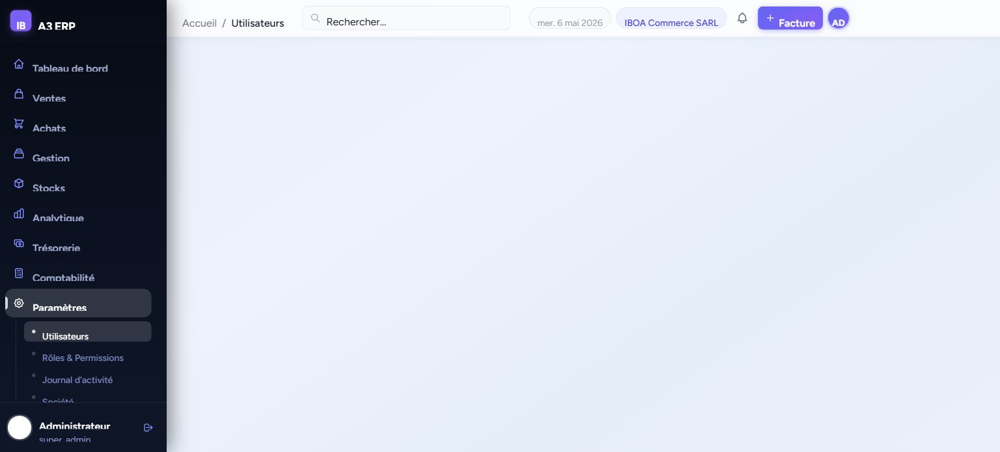
📖 Guide d'utilisation
- Accédez à Paramètres → Utilisateurs.
- Cliquez + Nouvel utilisateur pour créer un compte.
- Renseignez le nom, l'e-mail et définissez un mot de passe provisoire.
- Attribuez un rôle qui détermine les droits d'accès (ex: Commercial = accès ventes uniquement).
- Activez ou désactivez un utilisateur à tout moment sans supprimer son historique.
- Consultez le Journal d'activité pour tracer les actions de chaque utilisateur.
🔐Limitez les accès au strict nécessaire pour chaque utilisateur : principe du moindre privilège pour la sécurité de vos données.
🚀
Prêt à démarrer avec A3 ERP ?
Notre équipe vous accompagne dans la mise en place, la formation de vos équipes et la personnalisation de l'ERP selon les besoins spécifiques de votre activité.
Formation
Sessions de prise en main pour vos équipes
Support
Assistance technique dédiée
Personnalisation
Adaptation à votre secteur d'activité
A3 ERP · Document de présentation · Mai 2026